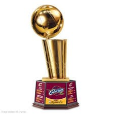

Cleveland Cavaliers
Championships
 The Cleveland Cavaliers, won the NBA finals for the first time in 2015-2016 NBA finals. Cavaliers started the season strong and rose to the top of the Eastern Conference, The Cavaliers finished 57-25 and obtain the number one seed in the Eastern conference for the first time since 2010. The team advance to NBA finals for the second year in row, facing the western conference champion Golden State Warriors in a rematch from the pevious years NBA finals, Which the warriors won in six games. The Cavaliers would go and defeat the warriors in a seven games.For more information about Cleveland Cavaliers visit
Cleveland CavaliersFor inqueries
Send MailForms